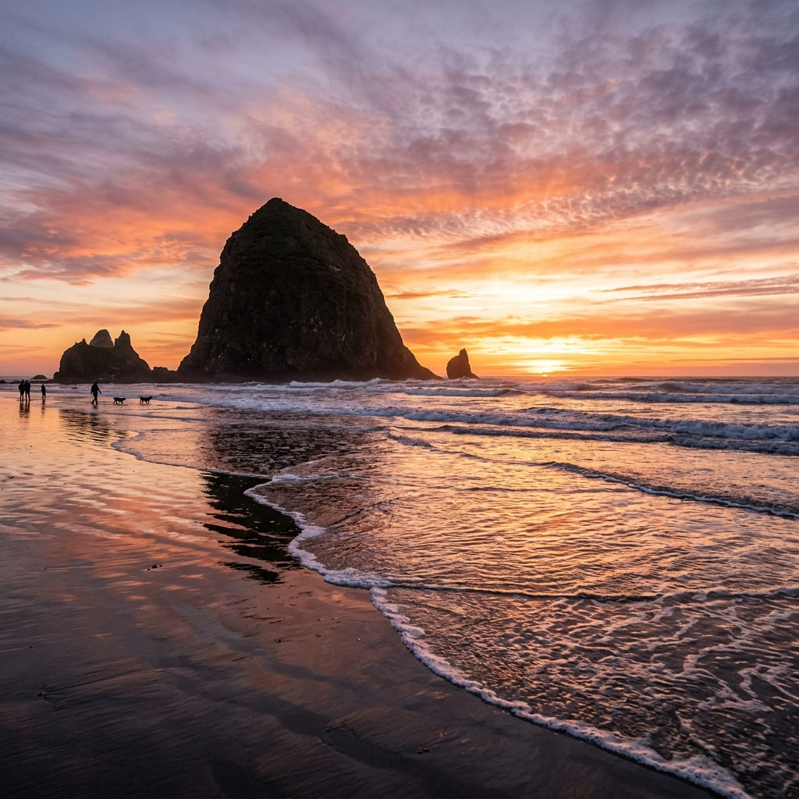
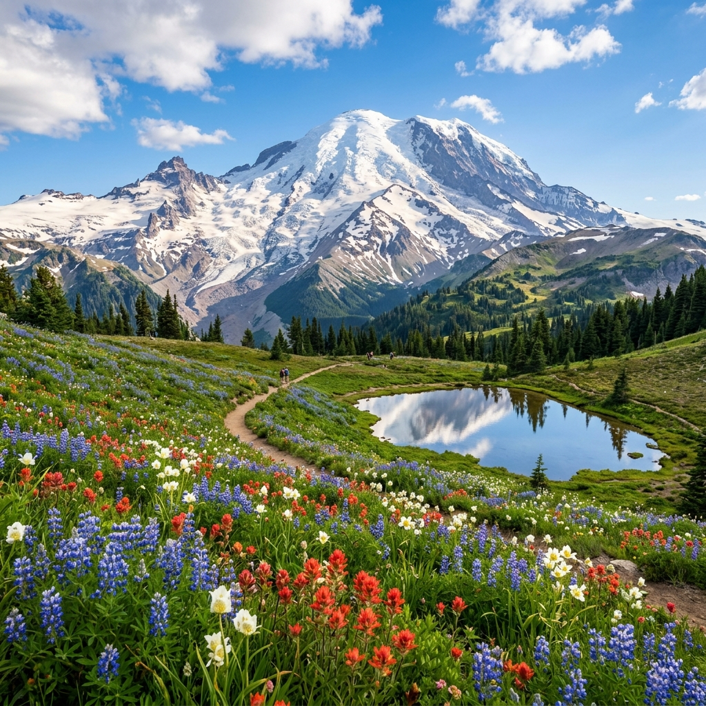

4
National Parks
~1,500
Total Miles
2
Road Trip Nights
5 / 2
Adults / Kids
1
Parks Pass
OPTIMIZED SEQUENCE: FARTHEST FIRST, CLOSEST LAST
This itinerary is designed for safety and convenience. The **longest drives** (Oregon Loop and Olympic NP, Days 2-4) are placed at the beginning when everyone's energy is peak. The **mid-distance trips** (North Cascades and Rainier) are in the middle. The **closest local attractions & airport transit** (Space Needle, Pike Place, Lake Sammamish beach play, packing) are saved for the final day (Day 7). Final day's driving is **under 50 miles total**, avoiding any stressful rush to the airport for your 11:59 PM flight.
🚙 The Restructured Pacific Northwest Loop
*Solid lines represent the 2-night road trip loop south. Dashed lines indicate day trips from the Redmond base.
The 7-Day Itinerary Snapshot
| Date | Leg / Route | Highlights Covered | Drive Distance & Lodging |
|---|---|---|---|
| Jun 20 (Sat) | Arrive SEA-TAC → Redmond Base | Snoqualmie Falls golden hour visit, dinner. Pack for Oregon. | 50 miles · Redmond Home |
| Jun 21 (Sun) | Redmond → Portland → Crater Lake | Multnomah Falls, Portland lunch, Crater Lake sunset. | 420 miles · Hotel: Klamath Falls |
| Jun 22 (Mon) | Crater Lake → Cannon Beach | Crater Lake Rim Drive, Castle Crest trail, Cannon Beach sunset. | 300 miles · Hotel: Cannon Beach |
| Jun 23 (Tue) | Cannon Beach → Olympic NP → Redmond | US-101 North Coast, Hurricane Ridge meadow walk, Edmonds Ferry. | 360 miles · Redmond Home |
| Jun 24 (Wed) | Redmond → North Cascades → Redmond | Diablo Lake Overlook turquoise views, Trail of the Cedars. | 230 miles · Redmond Home |
| Jun 25 (Thu) | Redmond → Mount Rainier NP → Redmond | Paradise visitor area, Skyline Trail to Myrtle Falls, Reflection Lakes. | 200 miles · Redmond Home |
| Jun 26 (Fri) | Seattle Downtown day & Fly Home | Space Needle, Pike Place, Waterfront, Japanese Garden, Lake play. Airport at 9 PM. | 50 miles · Midnight Flight |

Day 1 · Saturday, June 20, 2026
Arrival + Evening Snoqualmie Falls 💧
Land, touch base in Redmond, see the majestic falls, and prepare for Oregon!
Base Location: 8208 161st Ave NE, Redmond, WA 98052
Your relative's home is 35 minutes from SEA-TAC airport. We spend tonight in Redmond. Tomorrow we start the 2-night Oregon coast and park road trip!
-
5:00 PMLand at SEA-TAC · Pick up Grand Cherokee LRetrieve bags and load into the Grand Cherokee L. Note: fitting 5 adults, 2 car seats, and luggage will be tight. Keep large suitcases stored safely; carry only small overnight bags for the upcoming 2-night road trip. Drive to Redmond (~35 mins).
-
6:30 PMTouch base at Redmond homeFreshen up, let the 3-year-old stretch and change, and have a quick beverage. Put on warm evening layers for the waterfall.
-
7:15 PMDrive Redmond → Snoqualmie Falls (25 mi · 30 min)Take WA-202 E directly to the Snoqualmie Falls Upper Parking Lot. Day use is free.
-
7:45 PMSnoqualmie Falls Golden Hour ViewWalk the paved, flat 0.2-mile upper loop to see the magnificent 268-ft cascade in golden light (sunset is 9:10 PM in late June). The path is completely stroller-friendly. Grab group photographs with the falls.
-
8:45 PMDinner at Jashn, RedmondDrive back to Redmond for a delicious North Indian dinner. Fuel up the Grand Cherokee L at the Costco gas station in Redmond before bed to save time tomorrow.
-
10:00 PMPack bags for 2-night Oregon Road TripPack a single unified trunk bag for the 2 nights away (Klamath Falls + Cannon Beach hotels) to maximize passenger legroom in the vehicle. Set alarm for 6:30 AM. Sleep at Redmond base.
Day 2 · Sunday, June 21, 2026
Redmond → Multnomah Falls → Crater Lake 🌋
Drive south through Columbia River Gorge, stop in Portland, and reach Crater Lake for sunset!
DAYTIME DRIVING (420 MILES TOTAL)
This is your longest driving day. We have structured this with stops en route (Multnomah Falls and lunch in Portland) so that drivers can rest, and the kids can play.
-
7:00 AMDepart Redmond — Drive south via I-5 SLoad carry-on bags into the trunk. Drive south through Seattle, Tacoma, and Olympia. Kids can sleep or watch tablets during this stretch.
-
10:30 AMMultnomah Falls (Columbia River Gorge) StopDrive slightly east from Portland along I-84 E to Multnomah Falls. Walk the short, paved 0.2-mile path to the Benson Bridge directly in front of the thundering 620-ft waterfall. Safe and accessible for the toddler. Restrooms are available inside the historic stone lodge.
-
12:00 PMLunch at Chennai Masala, Portland (Hillsboro)Drive back into the Portland suburbs. Enjoy authentic South Indian paper dosas, idli, and curries at Chennai Masala. Voted one of Portland's best. Fuel up the vehicle.
-
1:30 PMDrive Portland → Crater Lake NP (230 mi · 4.5 hrs)Route: I-5 S past Salem and Eugene → OR-58 E through Willamette Pass → US-97 S to North Entrance road. Alternate driving duties. Rotate drivers at Cascade Station or Eugene rest areas.
-
6:00 PM🎟️ Enter Crater Lake & Rim Village OverlooksBuy the America the Beautiful Pass ($80) at the entrance gate. Drive up to Rim Village (7,100 ft). Catch your first views of the deepest lake in the US. The water is an impossibly deep blue. View Wizard Island from the overlook.
-
7:15 PMDrive to Klamath Falls Hotel (Check-in)Drive south (45 mins) to Klamath Falls to check in to your hotel rooms. Comfortably settle down.
-
8:15 PMDinner at Aroma Indian Restaurant, Klamath FallsEnjoy a hot, authentic Indian dinner (vegetable curries, freshly baked garlic naans). Sleep in comfortable beds.

Day 3 · Monday, June 22, 2026
Crater Lake Rim Drive → Cannon Beach Coast 🌊
Explore wildflower trails, drive north, and catch sunset at the iconic Haystack Rock!
LODGING TONIGHT: Cannon Beach / Astoria, OR
Tonight is spent at a hotel or Airbnb on the Oregon Coast. Settle into a coastal family-friendly suite to prepare for the Olympic Peninsula tomorrow.
-
8:00 AMDrive into Crater Lake NP (Rim Drive)Drive back up to the crater. Explore the scenic Rim Drive. Stop at viewpoints like Wizard Island Overlook and Phantom Ship Overlook.
-
9:30 AMCastle Crest Wildflower Trail WalkWalk the short 0.5-mile Castle Crest loop trail through a spring-fed meadow filled with wildflowers — very easy for the toddler. View the displays at the Steel Visitor Center. Refresh.
-
11:00 AMDrive Crater Lake → Cannon Beach (300 mi · 5.5 hrs)Route: OR-138 W to Roseburg → I-5 N through Eugene/Salem → US-26 W to Cannon Beach. Rotate drivers. Stop for snacks and toddler diaper checks.
-
5:00 PMCheck-in at Cannon Beach / Astoria HotelCheck-in to your hotel rooms, drop off heavy bags, change into beach clothes, and put on warm fleece layers (the Oregon Coast can be cool and windy in the evening).
-
6:00 PM🌅 Sunset stroll by Haystack Rock (Cannon Beach)Walk down to the shoreline. The massive 235-ft Haystack Rock rising from the surf is stunning. Let the 3-year-old play in the soft sand, while the 10-year-old explores the diverse tidepools at the rock's base. Capture sunset photographs over the Pacific.
-
7:45 PMDinner at local coastal spotEnjoy dinner in Cannon Beach or Astoria (there is an Indian restaurant in Astoria, or try coastal vegetarian pizza options). Rest in real beds on the coast.

Day 4 · Tuesday, June 23, 2026
Cannon Beach → Olympic National Park → Redmond Base 🌲
Drive up US-101 coast, walk Hurricane Ridge alpine trails, and cross Puget Sound via ferry!
EDMONDS-KINGSTON FERRY
On the drive back from Port Angeles, we will take the Edmonds-Kingston Ferry to cross Puget Sound. It saves an hour of driving and is a major highlight for the children.
-
8:30 AMDepart Cannon Beach Coast — Head NorthRoute: US-101 N. Cross the majestic Astoria-Megler Bridge over the Columbia River. Drive north along the Washington coast, past Aberdeen, to Port Angeles (220 mi · 4.5 hrs). Kids can nap en route.
-
1:00 PMLunch at Tasty Indian Food, Port AngelesEat lunch at Port Angeles' top-rated Indian restaurant. Fresh garlic naans, paneer curries, and warm rice. Fuel the Grand Cherokee L.
-
2:15 PMDrive Port Angeles → Hurricane Ridge (17 mi · 45 min)Drive up the steep, winding mountain road to Hurricane Ridge (5,242 ft elevation). Bring thick fleece jackets — it can be cold at the top.
-
3:00 PMOlympic NP — Hurricane Ridge Meadows WalkWalk the paved, flat 0.5-mile Big Meadow trail. Enjoy 360-degree views of the glacier-capped Olympic Range. Deer graze right next to the trail. Let the 10-year-old complete the Olympic Junior Ranger badge. Stroller works well on the paved path.
-
5:00 PMDrive Port Angeles → Kingston Ferry Dock (55 mi · 1.25 hrs)Drive east along WA-104 to the Kingston Ferry Terminal. Join the vehicle lane. Ferry ticket is ~$57 for car and passengers.
-
6:45 PM⛴️ Kingston → Edmonds Ferry (35-min crossing)Park the car and take the kids up to the passenger deck. Walk around, let them enjoy the sea breeze, and look for seals. Great views of the Seattle area.
-
7:45 PMDrive Edmonds → Redmond relative's home (25 mi · 35 min)Drive back to Redmond. Unpack bags and celebrate: the Oregon road loop is successfully completed! Sleep at Redmond base.

Day 5 · Wednesday, June 24, 2026
North Cascades NP (Diablo Lake) Day Trip 💎
See Diablo Lake's turquoise waters, take forested strolls, and return to base!
PACK YOUR LUNCH FROM REDMOND
There are no dining options or Indian restaurants near the North Cascades wilderness. Pack a full picnic lunch and plenty of snacks for the kids from home today.
-
8:00 AMDrive Redmond → North Cascades NP (115 mi · 2.5 hrs)Route: I-5 N to Burlington → WA-20 E (North Cascades Hwy) to Diablo Lake. The highway cuts through gorgeous river gorges and granite valleys. Fill gas in Marblemount.
-
10:30 AMDiablo Lake Overlook & Newhalem WalkArrive at Diablo Lake Overlook. View the turquoise glacial waters reflecting snow-capped peaks. Walk the flat, paved 0.5-mile Trail of the Cedars in Newhalem through giant old-growth trees. Perfect for the toddler.
-
12:30 PMPicnic lunch at Diablo Lake Overlook areaEat your packed lunch with panoramic lake views. Let the kids stretch and run in designated grassy viewing zones.
-
1:30 PMDrive back to Redmond BaseDrive US-2 W or I-5 S back to Redmond. Stop for quick snacks en route. (2.5 hrs)
-
4:00 PMRest at home baseRelax and recover at the relative's home. Play in the backyard.
-
6:30 PMDinner at Bombay Bistro, RedmondEnjoy a nice sit-down family dinner at Bombay Bistro. Relaxed pace. Sleep in Redmond.

Day 6 · Thursday, June 25, 2026
Mount Rainier National Park (Paradise) 🏔️
Explore glacier trails, visit Myrtle Falls, and view Reflection Lakes!
ALTITUDE ADVICE & PARKING
Paradise sits at 5,400 ft. Keep the 3-year-old hydrated. Parking fills completely by 11 AM; leaving by 8:00 AM gets you there in time.
-
8:00 AMDepart Redmond → Mount Rainier Nisqually Entrance (100 mi · 3 hrs)Route: I-405 S → WA-167 S → WA-706 E through Ashford. Scenic drive through forested foothills. No gas stations inside the park, so fill the tank in Ashford.
-
11:00 AM🎟️ Enter Rainier & Picnic at Paradise Visitor CenterShow your America the Beautiful Pass. Ascend to Paradise. Eat a packed picnic lunch from Redmond at the alpine picnic areas. Visit the Jackson Visitor Center for maps and toddler restrooms.
-
12:00 PMHike Skyline Trail to Myrtle Falls (1.6 mi RT)Walk the paved portion of the trail to Myrtle Falls. The stroller works on the paved path; carry the toddler for the unpaved viewing area. Capture the classic photo of the waterfall with Mount Rainier directly behind it. The 10-year-old can complete activities for their Rainier Junior Ranger badge here.
-
2:00 PMStop at Reflection Lakes & Narada FallsDrive down to Reflection Lakes (10 mins) for mirror reflections of the peak in the calm water. Then stop at Narada Falls to see the thundering 168-ft falls from the roadside viewpoint.
-
4:00 PMDrive Paradise → Puyallup for Dinner (50 mi · 1.5 hrs)Drive out of the park via Nisqually gate towards Puyallup on WA-7 N.
-
5:30 PMDinner at Karma Indian Cuisine, PuyallupEnjoy a hot, authentic Indian dinner at Puyallup's top-rated spot (Paneer butter masala, lentils, garlic naan). Return to Redmond base by 8:30 PM. Sleep in Redmond.
Day 7 · Friday, June 26, 2026
Seattle City Sights + Local Play & Fly Home 🏙️✈️
Space Needle, Pike Place, Japanese Garden, Lake play, packing, and airport transit!
RELAXED CLOSING DAY — FLIGHT AT 11:59 PM
All sightseeing today is within 30 minutes of the Redmond base and SEA-TAC airport. Total driving is under 50 miles. No long drives on departure day! Check-in closes at 10:00 PM; depart Redmond base by 9:00 PM.
-
8:30 AMDrive Redmond → Seattle Center (20 mi · 30 min)Take WA-520 W (Good to Go toll bridge) to Seattle Center. Park at the Seattle Center Garage (5th Ave N). Parking is ~$25/day. Keep flight luggage stored back at the Redmond house so the car has maximal space for city driving!
-
9:00 AMSpace Needle Observation DeckAscend 605 ft for 360-degree views of Seattle, Puget Sound, and Mt. Rainier. Stand on the glass floor. Toddlers and kids love this highlight. Timed entry at 9:00 AM avoids crowds. Under-5s are free.
-
10:45 AMMonorail to Westlake & Walk to Pike Place MarketCatch the historic Monorail (90 seconds) from Seattle Center to Westlake, then walk 4 blocks to Pike Place Market. Kids love the monorail!
-
11:15 AMPike Place Market & Seattle WaterfrontSee the fish toss at Pike Place Fish Co., rub Rachel the bronze Pig for good luck, and visit the gross but fascinating Gum Wall. Grab Piroshky Piroshky pastries or local fruits. Walk down to the Waterfront to see the Seattle Great Wheel.
-
1:30 PMDrive to Washington Park Japanese Garden (Arboretum)Drive to the serene 3.5-acre Japanese Garden. Walk the flat gravel paths. The kids will love feeding the giant koi fish in the pond (buy food at the gate). Serene, gorgeous flora. Admission ~$8, under-6 free.
-
3:00 PMDrive to Lake Sammamish State Park / Marymoor Park (Redmond)Drive back to Redmond (15 mins). Let the kids play in the shallow water at Lake Sammamish or run around the massive Marymoor playground. Great way for the children to burn energy before the long midnight flight!
-
4:30 PMComplete final packing at relative's homeReturn to the Redmond base (5 mins from park). Sweep for chargers, documents, kids' toys. Settle all suitcases. Load the Grand Cherokee L completely.
-
6:30 PMFarewell dinner at Jashn, RedmondCelebrate the end of an incredible Pacific Northwest adventure with a delicious, hot Indian dinner.
-
9:00 PMDrive to SEA-TAC Airport (30 mi · 40 min)Drive I-405 S to the airport. Return the rental Grand Cherokee L at the Rental Car Facility, take the shuttle to the terminal, check in bags, and board your 11:59 PM flight home. Safe travels!
Indian Restaurants Along the Route
Fully vetted family-friendly Indian dining spots sorted by road-trip leg.
⭐ Redmond Base (Within 10 mins)
Jashn
📍 Redmond, WA
Spacious seating, great for large groups. Excellent biryanis, curries, and tandoori naans. Highly recommended for family dinners.
Kanishka Cuisine of India
📍 Redmond, WA
Huge portions, extremely popular locally. Great Paneer Butter Masala, Samosas, and Biryani. Kid-friendly.
Taste of Hyderabad
📍 Redmond, WA
Famous for authentic Hyderabadi dum biryani and giant South Indian dosas. Perfect for brunch.
Shri Krishna Bhavan
📍 Redmond, WA
Traditional South Indian pure veg food. Excellent option for members of the group who eat strictly vegetarian.
🚗 Oregon Road Trip (Days 2-3)
Chennai Masala
📍 Portland/Hillsboro, OR
Voted best South Indian in Portland area. Spectacular paper dosas, idli, and spicy chettinad curries. Great for lunch en route.
Aroma Indian Restaurant
📍 Klamath Falls, OR (Near Crater Lake)
Perfect dinner or brunch stop when visiting Crater Lake. Clean seating, good paneer, naans, and dal.
🌲 Seattle Sights, Rainier, & Olympic (Days 4-6)
Roti Cuisine of India
📍 Queen Anne, Seattle
Considered Seattle's best Indian restaurant. Elegant, family-friendly, and very tasty curries. Close to Space Needle.
Karma Indian Cuisine
📍 Puyallup, WA (Rainier Route)
The only Indian restaurant on the drive back from Rainier. Excellent saag, curries, and garlic naans.
Tasty Indian Food
📍 Port Angeles, WA (Olympic NP)
Vetted local spot in Port Angeles. Freshly cooked, piping hot food. Great stop before heading to Hurricane Ridge.
Road Safety & Family Care Guide
Crucial guidelines for daytime driving, vehicle cargo management, and toddler care.
🚙 Jeep Grand Cherokee L Packing
- Seating Plan: Seating for 7 people (5 adults + 2 car seats). Two adults in front, two adults + baby seat in the middle row, one 10-year-old + one adult in the third row.
- Cargo Limits: With the 3rd row up, the trunk space is limited to ~17 cubic feet. It is impossible to fit 7 large suitcases.
- Actionable Fix: Limit everyone to one small carry-on bag/backpack. Alternatively, rent a roof box cargo carrier from a Yakima/Thule distributor in Seattle, or mail bulk luggage ahead to Redmond.
- Offline Navigation: Cell signal is zero in national parks. Download offline Google Maps for Washington, Oregon, and Montana before you leave.
🚗 Daytime Driving Safety
- Rest Areas: Take breaks every 2-2.5 hours en route to stretch legs, check diapers, and rotate drivers.
- Washington Rest Stops: Major rest stops en route include: I-5 South (Centralia, Castle Rock), OR-58 (Oakridge), US-97 (Klamath Falls rest areas).
- Hydration/Snacks: Keep plenty of cold water and healthy snacks (fruits, nuts, namkeen) inside the passenger cabin.
- Gas stops: Fill gas en route. Do not let the gas level drop below 1/4 tank, especially in remote parts of Oregon and near national parks.
👶 Toddler (3 Year Old) Travel Tips
- Long Drives: Travel during standard nap windows where possible. Keep toys, coloring books, and download favorite video shows on tablets.
- Altitude Warnings: Paradise (5,400 ft) and Hurricane Ridge (5,242 ft) are at high elevations. Ascend slowly, encourage hydration, and pack warm fleece hoodies with beanies.
- Motion Sickness: The mountain roads (Rainier, Hurricane Ridge) are wind-prone and twisty. Drive slowly and keep toddler motion sickness remedies ready.
- Diaper Logs: Restrooms are spaced out. Do diaper checks at every gas/rest stop without fail.
Trip Cost Spreadsheet
Estimated itemized budget for 5 adults + 2 kids (toddler mostly free) for activities, lodging, gas, and food.
| Category | Description | Est. Cost (USD) |
|---|---|---|
| 🎟️ National Parks Pass | America the Beautiful Pass covers Rainier, Olympic, Crater Lake, North Cascades. | $80 |
| 🏨 Hotels in Oregon (2 Nights) | Night 2 (Klamath Falls) + Night 3 (Cannon Beach/Astoria) for 7 people. | $500 |
| ⛴️ Edmonds-Kingston Ferry | Vehicle fee + passengers for Olympic NP return. | $57 |
| ⚡ Space Needle + City Tickets | Timed-entry tickets for Space Needle (5 adults, 1 child, toddler free). | $214 |
| 🎡 Seattle Great Wheel (Waterfront) | Pier 57 ferris wheel ride (optional). | $85 |
| 🌸 Japanese Garden Admission | Serene walk (5 adults, under-6 free). | $40 |
| ⛽ Fuel / Gas (1,500 miles) | ~18 mpg for Jeep Grand Cherokee L, ~$4.20/gallon. | $360 |
| 🍛 Food & Dining (7 Days) | Restaurants, road-trip snacks, and packed picnics. | $900 |
| TOTAL ESTIMATE | All-inclusive road trip expenses | $2,236 |
Cost Optimization Tips
• The America the Beautiful pass pays for itself with just two national parks.
• Pack picnic lunches for Mt Rainier, Olympic, and North Cascades days to save money and avoid park café queues.
• Pack picnic lunches for Mt Rainier, Olympic, and North Cascades days to save money and avoid park café queues.